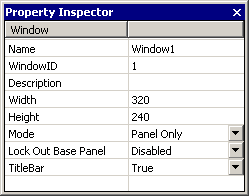
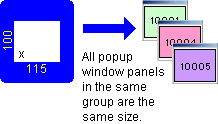
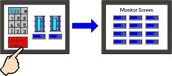
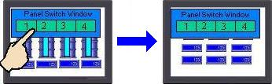
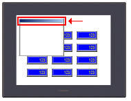
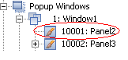
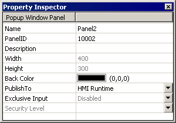

|
|
|
|
|
|
|
|
Right-click the Popup Windows folder and select New Popup Window.
Popup Window Group 1: Window1 and popup Window Panel 10001:Panel* are automatically generated, where * is an automatically assigned number.
Select the popup window group to open the popup window group properties.
In the Inspector, you can modify popup window dimensions, as required. These dimensions are common to all popup window panels in a popup window group. If you want to set different dimensions for individual panels, create separate popup window groups for each panel.

The following table describes the popup window group's properties.
Property |
Description |
||||||||||||||||||||||||||||
Name |
The popup window group's name. Whenever a popup window group is created, a default name is generated. When renaming an popup window group, its name must be unique within the target, must contain no more than 32 valid characters, and must follow the naming conventions. For details, see Appendix 9, Naming Conventions. |
||||||||||||||||||||||||||||
Window ID |
Enter a unique number for the popup window group between 1 and 8999. In Navigator, the window number is displayed before the popup window name, separated by a colon, for example:
1:Window1 where the popup window group number is 1 and the name is Window1. |
||||||||||||||||||||||||||||
Description |
Enter a description for the popup window. |
||||||||||||||||||||||||||||
Width |
Enter the width and height of the popup window in pixels.
 Target machines that support 40X40 touch grids will only support the width of popup windows in 8-pixel intervals only. See Appendix 5, Hardware Specifications, for a list of target machines that support 40X40 touch grids. |
||||||||||||||||||||||||||||
Height |
|||||||||||||||||||||||||||||
Mode |
Select one of the following display modes for popup windows: Panel Only or Persistent.

 |
||||||||||||||||||||||||||||
Lock Out Base Panel |
Select Enabled to deactivate the rest of the panel when a popup window displays. This feature provides security from accidental touches on the base panel. The rest of the panel is locked out until the popup window closes.
When a popup window locks the base panel, panel function keys and target functions will be locked, depending on the target type.
If a system keypad is enabled for the popup window, the keypad will display on top of the popup window until you complete the input operation. Select Disabled to keep the rest of the screen active when a popup window displays in Runtime. When Lock Out Base Panel is enabled and the popup window is open, the Go To Event Log button in the system window is disabled until you close the popup window. For more information on how the lock out affects the Event Log, see Section 28.1.2, Error Log Viewer. |
||||||||||||||||||||||||||||
Titlebar |
Select True to display a title bar with the window. You cannot display text on the title bar, and the title bar is not included in the popup window panel's height. You can drag the title bar to move the popup window. Not all target machines support this property, see Appendix 5, Hardware Specifications, for a list of targets that support this setting.  |
Select the popup window panel, 10001:Panel*.

The properties for the selected popup window panel are displayed. You can make changes, as required.

The following table describes the popup window panel's properties.
Property |
Description |
Name |
The popup window panel's name. Whenever a popup window panel is created, a default name is generated. When renaming an popup window panel, its name must be unique within the target, must contain no more than 32 valid characters, and must follow the naming conventions. For details, see Appendix 9, Naming Conventions. |
PanelID |
Enter a panel ID between 10001 and 18999. The panel ID must be unique to the target machine. The popup window panel's ID and name are separated by a colon, with the ID to the left and the name to the right. In the following example, the PanelID is 10001 and the Name is Panel2: 10001:Panel2 |
Description |
Enter a description about the popup window panel. This field accepts up to 255 characters. |
Width |
Displays the width
and height for a popup window panel, in pixels. These dimensions
are specified in the Popup Window properties, and they apply to
all popup window panels within the group. You cannot change the
width or height properties of individual popup window panels,
but must instead modify them in the Popup Window (group) properties. |
Height |
|
Background Color |
Specify the background color for the popup window panel. |
Publish To |
Define the publish settings for the popup window. Select whether the popup window is published to the target machine (HMI Runtime), Web Gate (Web Gate), or both (All). For more information, see Section 23.2.4.1, Web Gate Publish Settings. |
Exclusive Input |
Sets the popup window to be part of the exclusive input pool. Only one popup window out of this pool can display at any time. For more information, see Section 22.2, Setting Up Exclusive Input Relationships. |
Security Level |
Sets the Security Level for the Popup Window. Once a Security Level is defined, only users with the correct security level can access the Popup Window's functions. For more information on security levels, see Section 4.8.2.1, Protecting Panels and Parts from Unauthorized Users. |
In the popup window panel editor, draw your graphic objects and Toolchest parts.
Save the popup window panel, and return to a standard panel screen.